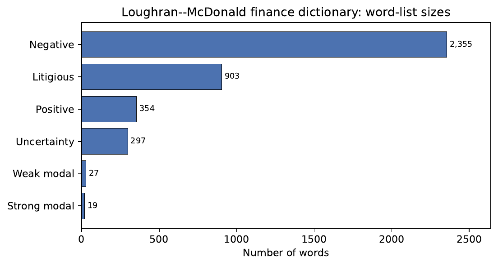

Large Language Models in Finance · Practical Session 9
Financial NLP & Sentiment — Hands On
LM scoring by hand, FinBERT vs. the lexicon, and a filing-date event study.
Juan F. Imbet · Paris Dauphine – PSL University
Summer school · math one click away — press m or click ⚙ "Under the hood"
Overview
One hour: 50 minutes of work, 10 of debrief
Three pencil-and-paper problems, a deterministic notebook, and a production-choice discussion — all aimed at one question: how do you turn a filing into a number you can trust?
Recap (5 min) — LM net sentiment, macro-F1, CAR.
Problem 1 (12 min) — score an MD&A excerpt with the LM lexicon by hand.
Problem 2 (12 min) — macro-F1 vs. accuracy on an imbalanced 3-class matrix.
Problem 3 (8 min) — build a \(\mathrm{CAR}[1,60]\) predictive regression.
Case study (15 min) — run the chapter-09 companion notebook.
Discussion (8 min) — lexicon vs. FinBERT vs. LLM in production.
Code
code/notebooks/09-financial-nlp-sentiment/ —
demo.ipynb (deterministic) and exercises.ipynb (live EDGAR lab).
01
Recap — the three formulas you need
Net sentiment, macro-F1, and cumulative abnormal return — plus why standardizing comes first.
Recap · the toolkit
Three formulas, one for each problem
Each of today's problems is one of these in disguise: a sentiment score, a fairness-aware accuracy metric, and an event-study return.
LM net sentiment — P1
Positive minus negative word hits, scaled by length.
Macro-F1 — P2
Average the per-class F1, so rare classes count as much as common ones.
CAR — P3
Stack up firm-specific abnormal returns over the event window.
Recap · the pre-step everyone skips
Standardize before you compare
A defence or chemicals firm uses structurally gloomy language. Compare raw scores across firms and you measure their industry, not their mood.
The fix: z-score within industry-year
Subtract the industry-year mean, divide by its standard deviation. Now every firm is judged against its own peers.
why it matters for the regression
Skip the transform and \(\beta_2\) just picks up an industry fixed effect, not a sentiment signal. The event study uses \(\tilde S\), never raw \(S_{\text{LM}}\).
02
The problems
Score a filing by hand, expose accuracy's blind spot, and design an event study.
Problem 1 · 12 min
Score an MD&A excerpt with the LM lexicon by hand
Excerpt (10-K MD&A)
"Operating margins contracted as input costs rose. Management remains uncertain about demand but is confident the restructuring will deliver improved profitability."
Using the LM lists — the negative list is by far the largest, yet a given excerpt can still score positive; uncertain is on the uncertainty list; cost is neutral in finance, not negative:
Identify the LM negative, positive, and uncertainty hits.
Take \(N_{\text{words}}=24\). Compute \(S_{\text{LM}}\).
A Harvard-GI classifier would also flag costs and contracted. Recompute the GI-style score — how large is the distortion?
discussion
Which word does the lexicon get wrong on negation — and how would FinBERT handle it?
Problem 2 · 12 min
Macro-F1 vs. accuracy on a neutral-heavy classifier
A 3-class classifier on 1,000 financial sentences. The neutral class is huge — exactly the case where a single accuracy number lies to you. Rows = true, columns = predicted.
pred neg
pred neu
pred pos
total
true neg
60
35
5
100
true neu
20
560
20
600
true pos
5
90
205
300
Compute overall accuracy.
Compute precision, recall, and F1 for the negative class.
Given \(F1_{\text{neu}}\approx 0.86\) and \(F1_{\text{pos}}\approx 0.74\), compute macro-F1.
Why is the gap between accuracy and macro-F1 the whole point?
Problem 3 · 8 min
Design the filing-date event study
800 earnings calls. For each you have the call-day standardized text sentiment \(\tilde S_{i,0}\), the earnings surprise \(\mathrm{SUE}_{i,0}\), and daily returns.
Write \(\mathrm{CAR}_i[1,60]\) in terms of abnormal returns. What benchmark \(\hat R\) would you use, and why not raw returns?
State the regression and the null/alternative on \(\beta_2\).
You find \(\hat\beta_2 = 0.018\) (\(t=2.6\)) after controlling for SUE. Interpret it economically.
Name two robustness checks before you trust this.
03
Case study — the companion notebook
Reproduce the LM dictionary figure and the worked net-sentiment number, then probe it.
Case study · the figure
The Loughran–McDonald dictionary, at a glance
Open code/notebooks/09-financial-nlp-sentiment/demo.ipynb. It is deterministic (no network) and reproduces the LM lexicon figure plus the worked net-sentiment example.
import matplotlib.pyplot as plt
# Loughran-McDonald finance dictionary word-list sizes.
lists = {"Negative": 2355, "Litigious": 903, "Positive": 354,
"Uncertainty": 297, "Weak modal": 27, "Strong modal": 19}
items = sorted(lists.items(), key=lambda kv: kv[1])
plt.barh([k for k, _ in items], [v for _, v in items], color="#4c72b0")
plt.xlabel("Number of words"); plt.title("Loughran-McDonald dictionary")
plt.tight_layout(); plt.show()

Figure. Output of the companion notebook: Loughran–McDonald finance dictionary
word-list sizes. The negative list (2,355 words) dominates — negative disclosures are far
more common than positive ones.
Source: Loughran & McDonald (2011); generated by gen_lm_lexicon.py.
Case study · the worked number
Net LM sentiment on the chapter excerpt
The same notebook reproduces the worked net-sentiment number from the chapter — one positive hit, four negative, 35 words.
the move that follows
That single decimal — whether a word is on a list or not — is what the diagnostic questions stress-test.
Case study · diagnostics
Three questions to interrogate the score
Asymmetry. The negative list (2,355) dwarfs the positive list (354). What does that tell you about corporate-disclosure language — and about the base rate a lexicon produces on a typical 10-K?
Sensitivity. The excerpt scores \(S_{\text{LM}}=-0.086\). Re-run with n_pos, n_neg = 2, 2. How sensitive is the sign to a single word-list decision — and what does that imply for reproducibility?
Live lab. In exercises.ipynb, pull a real 10-K from EDGAR and prices from yfinance. Score the filing, then test whether filing-day LM negativity is associated with the filing-day abnormal return. Does the sign match Loughran–McDonald (2011)?
Extension
Swap the lexicon for yiyanghkust/finbert-tone on the same filings. Where do the two methods disagree, and which sentences drive it?
04
Discussion — choosing a method in production
No universal winner: auditability vs. throughput vs. cold-start flexibility.
Discussion · 8 min
Three scenarios — pick lexicon, FinBERT, or LLM
For each, choose a method and justify it on cost, latency, labels, interpretability, and accuracy.
The regulator. Must audit why every sentiment score on a 10-K was assigned. 50k filings/year, no labelled data, full transparency required.
The desk. Scores 5M news headlines/day on a <50 ms/headline budget, with 10k labelled examples in hand.
The research team. Prototypes sentiment on a brand-new document type (crypto whitepapers) with zero labels and a small corpus.
frame your answer around
Auditability (lexicon wins), throughput/latency (distilled FinBERT wins), cold-start flexibility (LLM zero-shot wins) — and when you would distil an LLM into a small model for scale.
05
Solutions
Worked answers — try the problems first, then reveal.
Solution · Problem 1
The GI sign-flip is the whole case for finance lexicons
LM hits
Negative: contracted → 1
Positive: confident, improved → 2
Uncertainty: uncertain → 1 (hedging, not polarity)
costs, rose are neutral in LM
sign flips
GI adds costs and contracted as negative → the conclusion reverses. This is exactly the Loughran–McDonald (2011) critique: false positives on neutral finance vocabulary.
Solution · Problem 2
Accuracy 0.825 hides a weak negative class
0.825
overall accuracy
0.649
F1, negative class
0.750
macro-F1
the lesson
Accuracy 0.825 is propped up by 600 easy neutral cases. Macro-F1 0.750 reveals the model is markedly weaker on the economically important negative tail (\(F1=0.65\)) — and the tails are what you trade on. Report macro-F1.
Solution · Problem 3
Text carries drift orthogonal to the EPS surprise
Benchmark. \(\hat R\) from a market model / CAPM / factor benchmark. Raw returns mix in market-wide moves; abnormal returns isolate firm-specific drift.
Interpretation. \(\hat\beta_2=0.018,\ t=2.6\): a one-SD rise in standardized sentiment → +1.8 pp of 60-day abnormal return, orthogonal to the quantitative surprise — post-announcement drift conditioned on tone.
Robustness. (i) strictly out-of-sample period not used for model selection; (ii) cluster SEs by firm/date; also check look-ahead (timestamp vs. close) and a placebo pre-event window.
Wrap-up
Four takeaways — and where the next practical goes
Lexicons are auditable but brittle — the GI vs. LM sign flip (P1) is the whole case for domain dictionaries.
Report macro-F1, not accuracy — the neutral majority hides weakness on the actionable tails (P2).
Standardize, then test economically — z-score within industry-year, run the CAR regression, validate out-of-sample (P3).
Method choice is a trade-off — auditability vs. throughput vs. cold-start, with no universal winner.
Next practical
Practical 10 — domain-specific LLMs: fine-tuning and adaptation of FinBERT's successors on long financial documents.
A
Appendix — stretch problems
Inter-annotator reliability and the score-to-Sharpe pipeline. Beyond the core session.
Stretch · reliability
Krippendorff's alpha on two annotators
Two annotators label five sentences (P = pos, N = neu, G = neg). How reliable is the labelling?
s1
s2
s3
s4
s5
Annot. A
P
N
G
N
P
Annot. B
P
N
G
G
P
Compute observed disagreement \(D_o\) (fraction of disagreeing pairs).
With marginal frequencies, compute \(D_e=1-\sum_c(n_c/n)^2\).
Compute \(\alpha=1-D_o/D_e\). Is it above Krippendorff's 0.667 reliability bar?
Why would the ordinal variant give a more lenient verdict on the s4 N/G disagreement?
Stretch · from score to Sharpe
When a backtest Sharpe of 1.4 becomes 0.5
A standardized news-sentiment signal \(\tilde S\) is rebalanced daily into a long–short portfolio (long top decile, short bottom decile).
In-sample annualized Sharpe is 1.4; strictly out-of-sample it is 0.5. Name three reasons for the decay (hint: one is the lecture's "sentiment inflation" box).
Kirtac & Germano (2024) report OPT beats the LM dictionary on long–short Sharpe. Why might the gap shrink after transaction costs at high turnover?
Lehner (2024) shows LLMs can rewrite filings to shift measured tone. How does adversarial text-generation threaten a filings-based signal's out-of-sample stability?
the discipline
A backtest Sharpe is an upper bound. Turnover, sentiment inflation, and adversarial text all erode it before a dollar is traded.